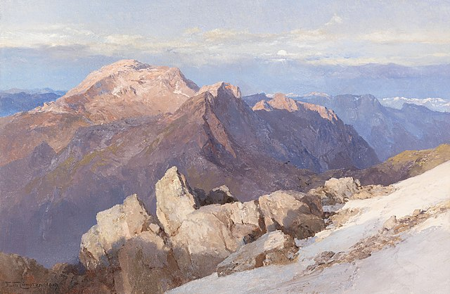
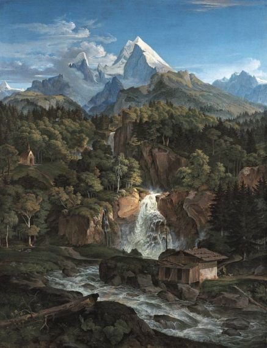
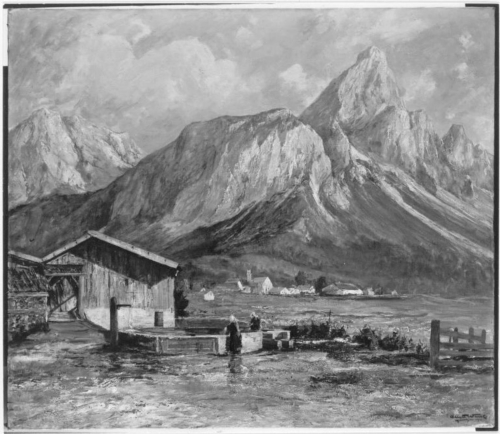
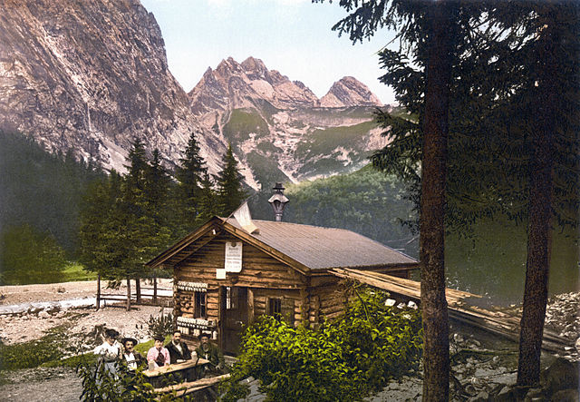
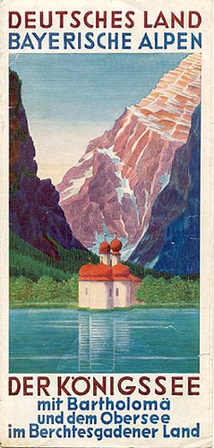
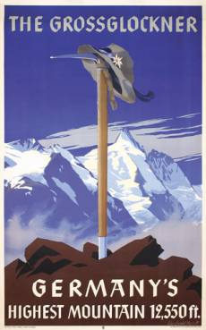

Edward Theodore Compton (1919)
E. T. Compton was simultaneously a mountain climber and an artist. He enjoyed climbing the Austrian and German mountains before sitting down recreating the mountain views on his canvas.

Ludwig Richter (1824)
The Watzmann mountain (depicted) is in the top three of Germany's highest mountains. Richter was less of an alpine heights lover than Compton (previous artpiece), but made numerous paintings of landscapes and scenes throughout Europe.

Albert Wenk (1863)
A humble mountain dwelling with the Soienspitze on the background.

Photograph of the Hochwanner (circa 1900)
There is a multitude of travel photos that present beautiful time-capsules of the Alpine views. This colorized image is a very early example.
Photograph (present day)
A more modern example of travel photos from the German alps.

A poster from 1936
A poster with hopes of drawing tourists to the Königsee region in Berchtesgaden.

A poster from 1938
Another poster that portrays the alpine scenery of Bavaria.
(End of gallery)